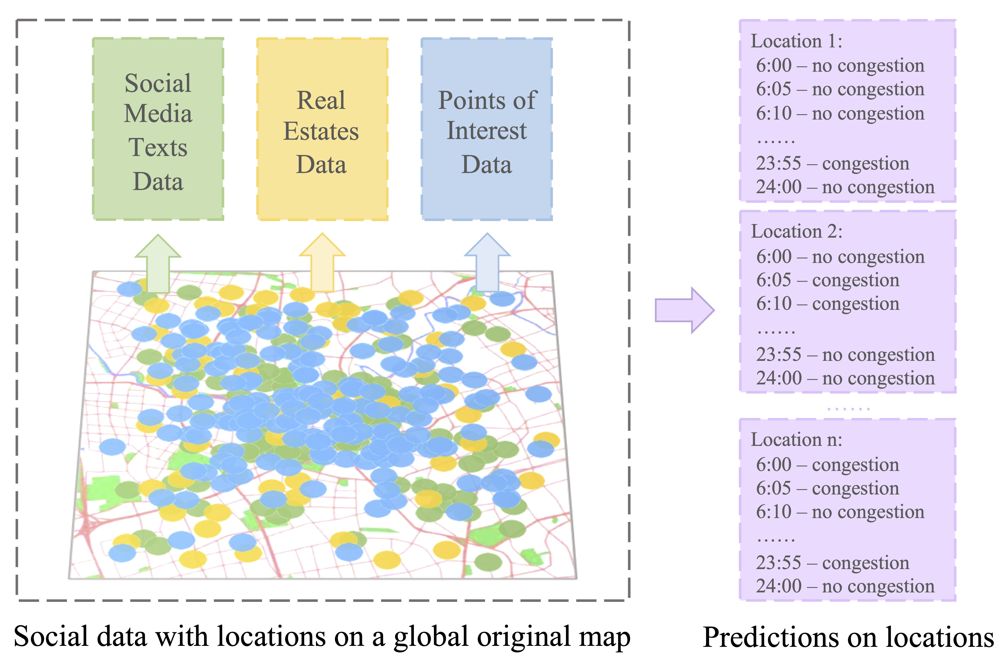

Traffic Prediction

Large-Scale Traffic Congestion Prediction based on Multimodal Fusion and Representation Mapping
Bodong Zhou, Jiahui Liu, Songyi Cui, Yaping Zhao,
[Paper][Code]
Real Estate Price Prediction

PATE: Property, Amenities, Traffic and Emotions Coming Together for Real Estate Price Prediction
Yaping Zhao,
Ramgopal Ravi, Shuhui Shi, Zhongrui Wang, Edmund Y. Lam, Jichang Zhao
[Paper][Code]